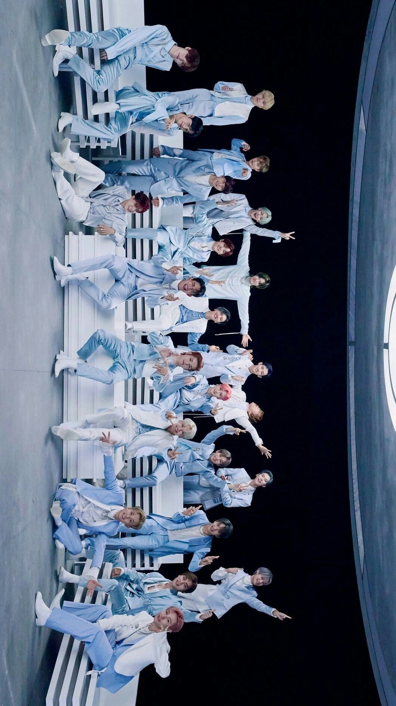

What is Stay And Nctzen?
Stay

What is Stay?, On August 1, 2018, 5 days ahead of their comeback, a video was uploaded on Stray Kids' YouTube channel, announcing the group's fandom name. The video first showed the group's logo and then the word "Kids" and the letter "r" from "Stray Kids" disappeared, revealing the group's fandom name to be "STAY". Woojin said that the fandom name was come up by the company and the fans themselves.
Nctzen
NCT finally has a name for its fans, namely NCTzen. Now NCT fans no longer need to call themselves the NCT booth. This NCTzen seems to be a play on the English word "citizen" which means resident. Wow, the name really fits, especially since NCT is a group with a global concept where the members come from various countries. Now, NCT has members from Korea, China, Canada, Japan and Thailand